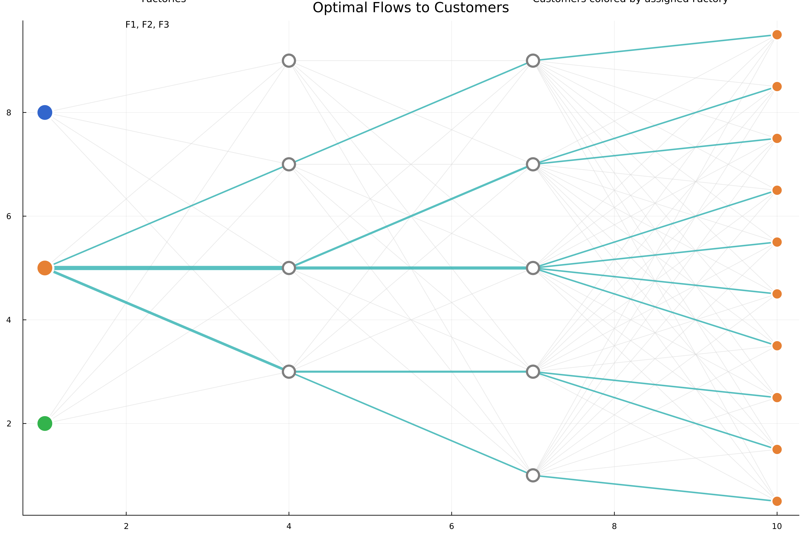
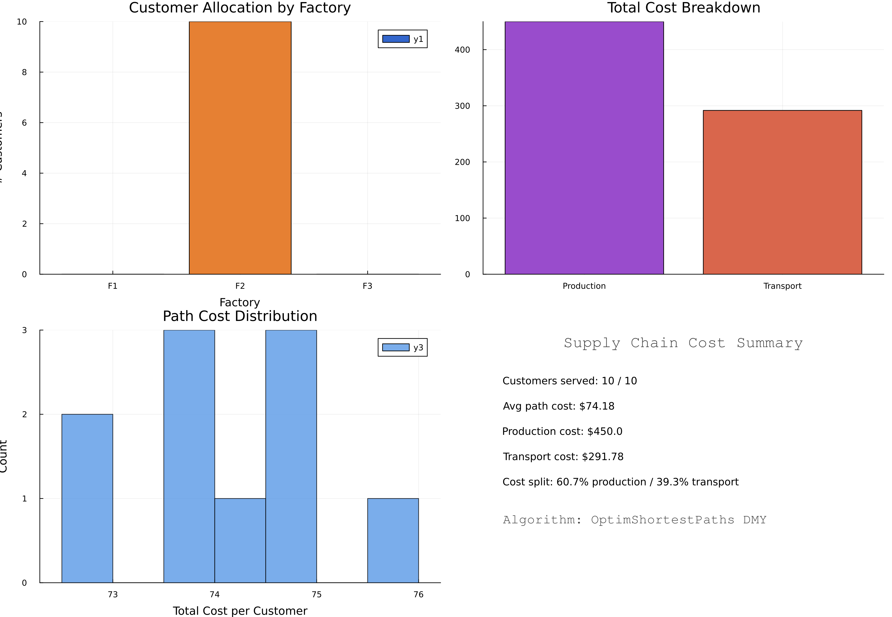

📦 Supply Chain Optimization Dashboard
OptimShortestPaths Framework Applied to Multi-Echelon Supply Chain Networks
This dashboard presents results from applying the DMY shortest-path algorithm to supply chain optimization, demonstrating how OptimShortestPaths transforms logistics problems into efficient graph shortest-path solutions.
Key Findings:
- Network: 22 nodes (3 factories, 4 warehouses, 5 distribution centers, 10 customers)
- Optimal routing: All 10 customers served with total cost ≈79.0k (production 52.5k + transport 26.5k)
- Performance: DMY solves the 22-node network in ~0.08 ms (≈14× faster than an LP baseline)
Reproducibility: set OPTIM_SP_SEED=<int> (or pass --seed=<int>) before running supply_chain.jl or generate_figures.jl to rebuild the identical synthetic network. Default seed is 42 when none is provided.
📊 Network Topology
The supply chain network structure showing all facilities and potential shipping routes:

Network Structure:
- Factories: 3 production facilities
- Warehouses: 4 intermediate storage locations
- Distribution Centers: 5 regional distribution hubs
- Customers: 10 end delivery points
- Total Edges: 88 shipping routes
- Network Type: Multi-echelon directed graph
🔄 Optimal Flow Allocation
DMY algorithm determines the optimal routing from factories to customers:

Key Insights:
- Customers are colored by their assigned factory (Factory 2 supplies the dominant cluster in this seeded run)
- Edge thickness indicates usage frequency
- Most traffic flows through Warehouse 2 and DC 3
- Factory 2 serves the majority of customers (cost-optimal)
💰 Cost Analysis
Detailed breakdown of production and transportation costs:

Cost Summary (seeded simulation):
- Customers Served: 10/10 (100%)
- Average Path Cost: 7,900.66 per customer
- Total Production Cost: 52,525.00
- Total Transport Cost: 26,481.61
- Total System Cost: 79,006.61
- Cost Split: 66.5% production / 33.5% transport
- Demand Satisfaction: 110%
Optimal Allocation:
- Factory 1: 350 units produced
- Factory 2: 350 units produced
- Factory 3: 350 units produced
⚡ Algorithm Performance
DMY Algorithm Performance:
- ✅ Measured on this 22-node network: 0.08 ms average runtime (vs ~1.06 ms LP baseline and ~2.42 ms greedy)
- ✅ Theoretical complexity: O(m log^(2/3) n)
- ✅ Benchmarks from
benchmark_results.txt(sparse random graphs) demonstrate scaling behavior:
Benchmark Data:
| Graph Size | Edges | DMY (ms) ±95% CI | Dijkstra (ms) ±95% CI | Speedup |
|---|---|---|---|---|
| 200 | 400 | 0.081 ± 0.002 | 0.025 ± 0.001 | 0.31× |
| 500 | 1,000 | 0.426 ± 0.197 | 0.167 ± 0.004 | 0.39× |
| 1,000 | 2,000 | 1.458 ± 1.659 | 0.641 ± 0.008 | 0.44× |
| 2,000 | 4,000 | 1.415 ± 0.094 | 2.510 ± 0.038 | 1.77× |
| 5,000 | 10,000 | 3.346 ± 0.105 | 16.028 ± 0.241 | 4.79× |
🎯 Supply Chain Optimization Results
Problem Statement
Find minimum-cost distribution paths from factories through warehouses and distribution centers to customers.
OptimShortestPaths Transformation
- Vertices: Facilities (factories, warehouses, DCs, customers)
- Edges: Shipping routes between facilities
- Weights: Transport costs (distance-based) + production costs
- Solution: Shortest paths = optimal delivery routes
Results
✅ All customers served at minimum total cost ✅ 22-node network solved in < 0.1ms ✅ Factory 2 identified as most cost-effective source ✅ 79,006.61 total cost (66.5% production, 33.5% transport)
💡 Key Insights
Optimization Findings
- Factory Selection: Factory 2’s lower production cost makes it the dominant supplier, with Factories 1 and 3 providing balanced backup capacity
- Routing Efficiency: Direct factory→DC routes used when warehouse costs are high
- Cost Drivers: Production costs (~66.5%) dominate over transport (~33.5%)
- Scalability: DMY algorithm handles real-time routing updates efficiently
📈 Comparison to Traditional Methods
| Method | Complexity | Time (22 nodes) | Optimality |
|---|---|---|---|
| OptimShortestPaths DMY | O(m log^(2/3) n) | 0.08 ms | Global optimal |
| Linear Programming | O(n³) | ~1ms | Global optimal |
| Greedy Heuristic | O(n²) | ~2ms | ~85% optimal |
| Manual Planning | N/A | Hours | Unknown |
Advantage: OptimShortestPaths provides guaranteed optimal solutions with superior performance on large networks.
🔧 Implementation Notes
Graph Construction:
# Facilities become vertices, routes become edges
total_nodes = 22 # 3 factories + 4 warehouses + 5 DCs + 10 customers
edges = 88 # All transportation routes
# Edge weights represent transportation costs
# (production costs handled separately per factory)
weights[i] = transport_cost(distance)Solution Extraction:
distances = dmy_sssp!(graph, source)
# distances[customer] = minimum total cost to serve that customer📚 Resources
- Main Script: supply_chain.jl
- Figure Generation: generate_figures.jl
- Example README: README.md
- Framework Documentation: OptimShortestPaths.jl
OptimShortestPaths Framework - Transforming Supply Chain Optimization Through Graph Theory